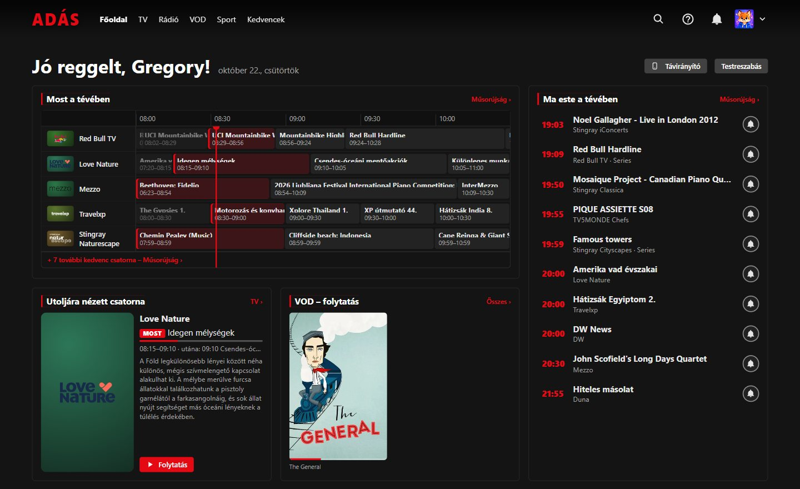
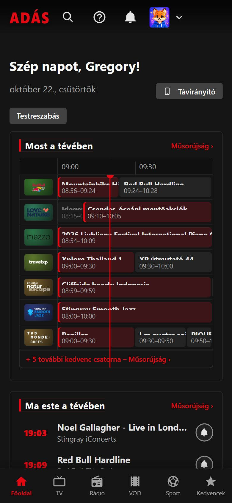
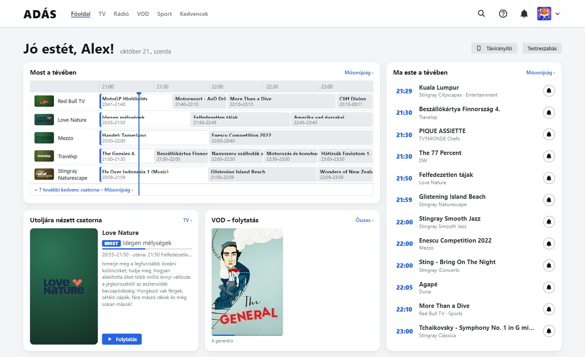
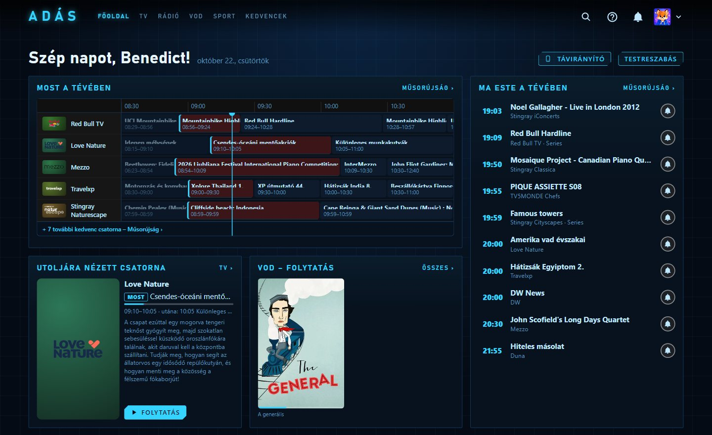
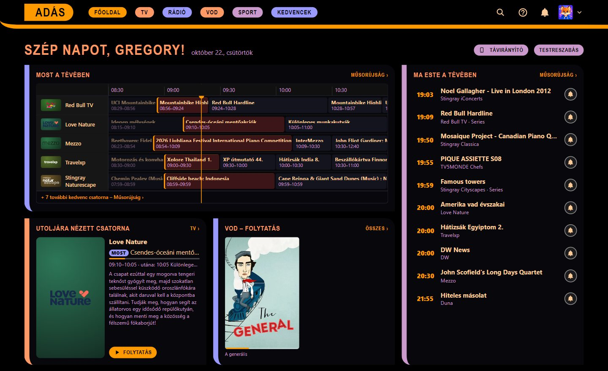
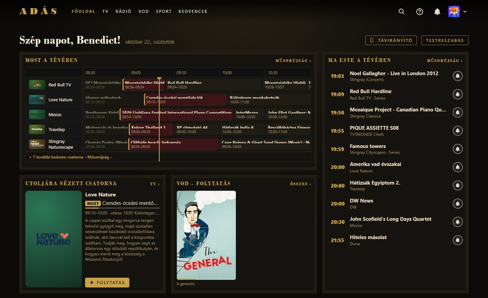
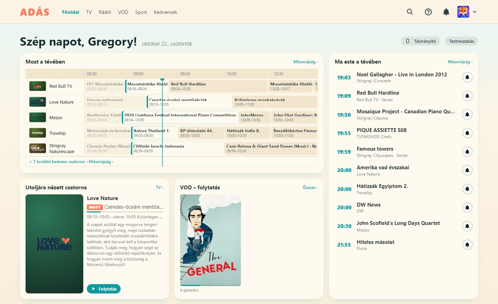
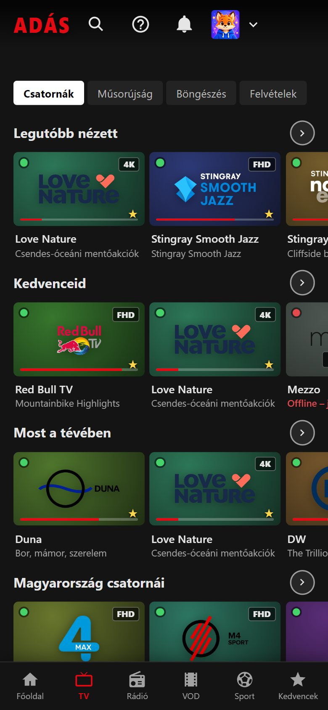
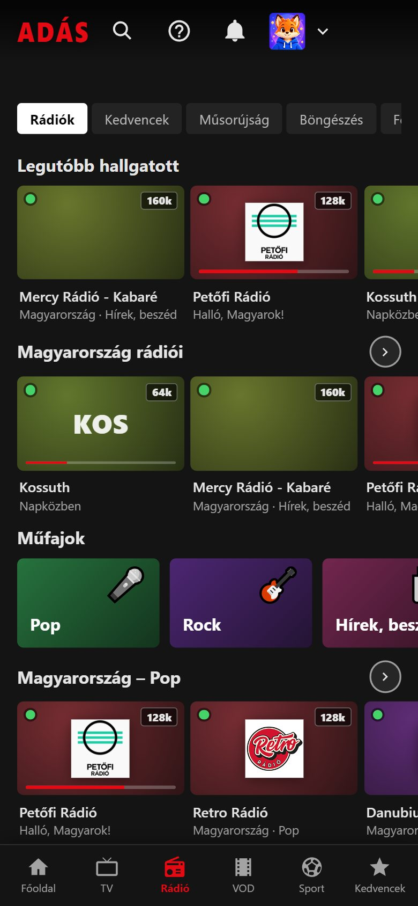

Élő tévé valódi műsorújsággal
Több ezer nyilvános csatorna országonként, csatornaszámokkal, idővonalas műsorújsággal, emlékeztetőkkel és „következik” jelzéssel.
Az Adás ingyenes, nyílt forrású lejátszó a nyilvánosan elérhető tévé- és rádióadásokhoz. Több ezer csatorna műsorújsággal, a saját film- és sorozattárad, rádióadók a világ minden tájáról – egyetlen, streaming-szolgáltatás érzetű felületen, a laptoptól a nappali tévéjéig.
Legfrissebb verzió: ·


Nincs fiók, nincs előfizetés, nincs reklám: telepíted, kiválasztod a profilod, és már szól is. A telefonod pedig, ha kell, távirányító.
Több ezer nyilvános csatorna országonként, csatornaszámokkal, idővonalas műsorújsággal, emlékeztetőkkel és „következik” jelzéssel.
Online VOD-listák és a saját NAS-tárad borítókkal, adatlappal, folytatással, következő résszel és automatikus magyar vagy angol felirattal.
Több tízezer adó, „most szól” borítóval, hangszínszabályzó és hanghatások, vizualizáció, elalvás-időzítő – és a háttérben is szól.
Élő eredmények, közelgő meccsek és tabellák a követett bajnokságokhoz és csapatokhoz – és egy kattintásra a csatorna, amelyik adja.
Mindenkinek saját profil, saját kedvencekkel és kinézettel. A gyerekprofil csak gyerektartalmat mutat – napi kerettel, korhatárral és szülői PIN-nel.
Tévé- és rádiófelvétel azonnal vagy a műsorújságból ütemezve, az élő adás megállítása és visszatekerése – majd vágás az alkalmazásban (asztali változat).
Küldd a nézett adást Chromecastra vagy DLNA-tévére, használd a telefonod távirányítóként QR-kóddal, és szinkronizáld a beállításaidat az eszközeid között.
A mozisötéttől a papírfehérig, a retrótól a hologramig – profilonként. A témaszerkesztővel sajátot is készíthetsz, és fájlként megoszthatod.
Valódi képernyőképek az alkalmazásból – nyilvánosan elérhető csatornákkal és adókkal.
Minden profil a saját kinézetét választja. Íme öt a 34 beépített témából – vagy tervezz sajátot a témaszerkesztőben.





Van nagy kontrasztú és nagybetűs téma is a könnyebb olvashatóságért.
Ugyanaz az alkalmazás Android telefonon és tableten – alsó menüsávval, fekvő, teljes képernyős lejátszással –, Android TV-n és Google TV-n pedig távirányítóra szabott felülettel.


Ingyenes és nyílt forrású. verzió, megjelent: .
Windows 10 és 11. Az alkalmazásból frissíthető.
Nyisd meg a .dmg-t, és húzd az Adást az Alkalmazások mappába. Az Adás nincs az Apple-nél hitelesítve, ezért az első indításhoz kell egy lépés: a Finderben jobb klikk → Megnyitás → Megnyitás; macOS 15-től indítsd el egyszer, majd Rendszerbeállítások → Adatvédelem és biztonság → Megnyitás mindenképp.
Az AppImage az alkalmazásból magát frissíti.
Android 6.0 vagy újabb. Kérésre engedélyezd a telepítést a böngészőnek vagy a fájlkezelőnek.
A tévé indítójában is megjelenik, távirányítóra szabott felülettel. A tévére pl. a Send files to TV alkalmazással küldheted át.
Android nélküli tévén az asztali vagy az androidos alkalmazásból Chromecastra vagy DLNA-tévére küldheted a nézett adást. (Az LG webOS-változat szünetel, a kiadásokban nincs benne.)
Minden fájl SHA-256 ellenőrző összege megtalálható a kiadás oldalán, a SHA256SUMS.txt fájlban; a beépített frissítő telepítés előtt ellenőrzi.
Az Adás lejátszó, nem szolgáltatás. Nincs saját szervere, és nincs mit eladnia.
Nincs regisztráció és reklám, és az Adás a fejlesztőjének nem küld használati adatot. A profilok, a kedvencek, az előzmények és a nézési statisztikád az eszközödön maradnak. (Egyetlen kivétel: a Radio Browser adatbázisából indított rádióadónál – ahogy az ottani szabály kéri – a Radio Browser megkapja az adó azonosítóját, hogy a népszerűségi listája pontos legyen. Ha a Radio Browser forrást kikapcsolod (Beállítások → Rádió), ez is megszűnik.)
Az egész alkalmazás a GitHubon van, MIT-licenc alatt – elolvashatod, magad is lefordíthatod, vagy segíthetsz jobbá tenni.
A frissítések a hivatalos GitHub-kiadásokból jönnek, és csak akkor települnek, ha az SHA-256 összeg (Androidon az aláírás is) egyezik.
A kivetítés, a telefonos távirányító és a szinkron az otthoni hálózaton fut, egyszer használatos kulcsokkal és kódokkal védve.
A gyerekprofil csak gyerektartalmat mutat, napi nézési kerettel, a műsorújság korhatárával és szülői PIN-nel.
Az alkalmazás csak a használt forrásokhoz kapcsolódik – csatornalisták, műsorújság, adások, rádió- és felirat-adatbázisok. A súgó mindet felsorolja.
Igen. Az Adás ingyenes és nyílt forrású (MIT-licenc), előfizetés, reklám és alkalmazáson belüli vásárlás nélkül.
Alapból a szabadon elérhető adásokat gyűjtő, nyilvános iptv-org listából, a műsorújság pedig nyilvános XMLTV-forrásokból. Saját M3U-listákat és műsorforrásokat is hozzáadhatsz. Az Adás maga nem tárol és nem szolgáltat tartalmat – azt játssza le, amire a listák mutatnak.
A nyilvános adások jönnek-mennek, és egyesek csak a saját országukban nézhetők. Az Adás csendben ellenőrzi az adásokat, jelöli a hibásakat és a földrajzilag korlátozottakat, és ha egy csatornának több forrása van, a következővel próbálkozik.
Igen: Android TV-re / Google TV-re a tévés APK-t telepítsd. Más tévékre a számítógépről vagy a telefonról Chromecastra vagy DLNA-tévére vetítheted ki az adást.
Igen – az Adás Magyarországon készült, magyarul és angolul beszél, mindkét nyelven beépített súgóval. Ez az oldal angolul.
Csak az eszközödön – Windowson a %APPDATA%\Adás, macOS-en a ~/Library/Application Support/Adás, Linuxon a ~/.config/Adás mappában, Androidon és tévén az alkalmazás saját tárhelyén. Mindent kimenthetsz egyetlen fájlba, vagy egy 12 jegyű kóddal átviheted egy másik eszközre.
Az asztali és az androidos változat a GitHubon keresi az új kiadásokat, és az ellenőrző összeg egyezése után az alkalmazásból letölthető és telepíthető. A beállítások és a profilok megmaradnak.